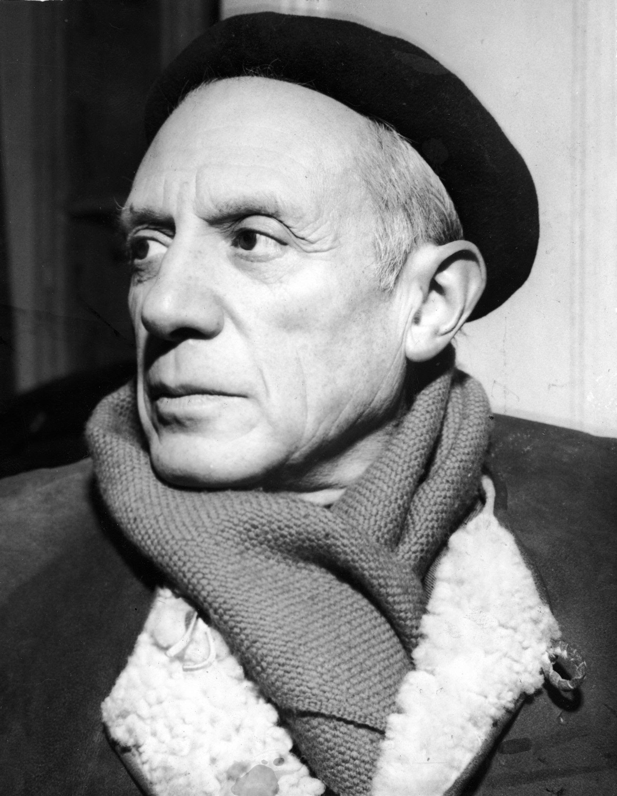

El exitoso pintor
Pablo Ruiz Picasso (n. Málaga, España; 25 de octubre de 1881 en Mougins, Francia; 8 de abril de 1973), conocido como Pablo Picasso, fue un pintor y escultor español, creador, junto con Georges Braque y Juan Gris, del movimiento cubista.
Considerado uno de los mayores artistas del siglo XX, participó desde la génesis de muchos movimientos artísticos que se propagaron por el mundo y ejercieron una gran influencia en otros grandes artistas de su tiempo. Incansable y prolífico, pintó más de dos mil obras actualmente presentes en museos y colecciones de toda Europa y del mundo. Además, abordó otros géneros como el dibujo, el grabado, la ilustración de libros, la escultura, la cerámica y el diseño de escenografía y vestuario para montajes teatrales.
En lo político, Picasso se declaraba pacifista y comunista. Fue miembro del Partido Comunista Francés hasta su muerte,2 el 8 de abril de 1973 en Notre-Dame-de-Vie (Mougins, Francia) a los 91 años. Está enterrado en el parque del castillo de Vauvenargues (Bouches-du-Rhone).
Familia
Según su certificado de nacimiento se llamó Pablo Diego José Francisco de Paula Juan Nepomuceno Cipriano de la Santísima Trinidad Ruiz Picasso.
Hijo primogénito del matrimonio formado por José Ruiz Blasco, profesor de la Escuela de Bellas Artes de esta capital, y María Picasso López. Tuvo dos hermanas, Dolores (1884-1958) y Concepción (1887-1895).
Estudios
Su padre se encargará de iniciarle en el dibujo y la pintura. En septiembre de 1891, José Ruiz Blasco accede a una plaza de profesor en la Escuela de Bellas Artes de La Coruña llevándose a toda la familia con él. Picasso será admitido en esta escuela un año después.
Hasta el año 1898 utilizó los apellidos paterno y materno para firmar sus trabajos, pero desde 1901 firmó solo con el apellido de la madre.
Pintor
Con diez años realizó sus primeras pinturas y a los quince, ingresó en la Escuela de Bellas Artes de Barcelona. Consiguió el ingreso presentando el lienzo Ciencia y caridad (1897, Museo Picasso, Barcelona).
Cubismo
Influenciados por el tratamiento volumétrico de las formas pictóricas de Paul Cézanne, Picasso y Georges Braque pintaron en 1908 una serie de paisajes dentro de un estilo que un crítico describió después como si hubieran sido hechos a base de "pequeños cubos", imponiéndose así el término cubismo. La monocromía prevaleció en estas representaciones de motivos totalmente fragmentados, mostrados de modo simultáneo desde varios lados. Los temas favoritos del artista fueron los instrumentos musicales, las naturalezas muertas y sus amigos, se destaca el retrato de uno de sus marchantes Daniel Henry Kahnweiler (1910, Art Institute, Chicago).
